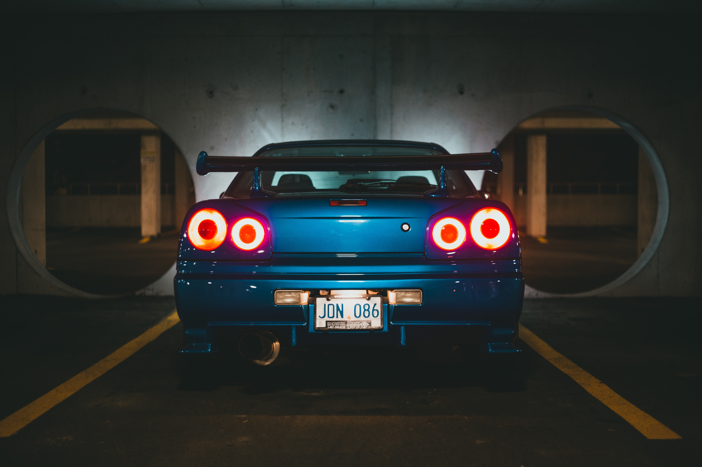

Inicio
Carking
Te ayudamos a gestionar tu parqueadero de una forma más eficiente

¿Como realizar una reserva?
Reservar en Carking es muy facil, solo debes dar click en la opcion de reservar, seguir el paso a paso y registrar el pago del cliente.
 ©CarKing - 2022 - Mabel Diaz - Michael Muñoz - Felipe López
©CarKing - 2022 - Mabel Diaz - Michael Muñoz - Felipe López